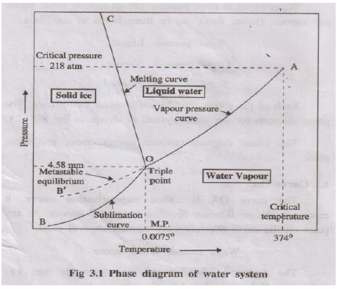
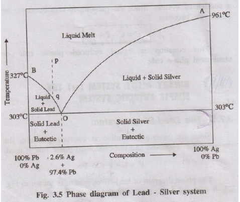

ENGINEERING CHEMISTRY – UNIT 2 (PHASE RULE & COMPOSITES) – PART B
Phase Rule: For a system in equilibrium whose state is influenced only by pressure, temperature and concentration (and not by gravity, electrical or magnetic forces), the number of degrees of freedom (F) is related to the number of components (C) and phases (P) by
\[
F = C - P + 2
\]
This relation is called Gibbs phase rule.
Water exists in three phases: ice (solid), liquid water and water vapour. Since the chemical composition of all three phases is H₂O, it is a one-component, three-phase system. Its phase diagram is a pressure–temperature (P–T) diagram.

Represents equilibrium between liquid water and vapour:
Water ⇌ Water vapour
- For any point on OA, two phases (liquid + vapour) exist.
- Applying phase rule: \(F = 1 - 2 + 2 = 1\). Hence the system is univariant.
- The curve ends at the critical temperature (≈374°C); above this, only vapour exists.
Represents equilibrium between ice and vapour:
Ice ⇌ Vapour
- Two phases (solid + vapour) are in equilibrium.
- Phase rule: \(F = 1 - 2 + 2 = 1\) → univariant.
- Curve extends theoretically towards very low temperatures (near absolute zero) where only ice exists.
Represents equilibrium between ice and liquid water:
Ice ⇌ Water
- Again, two phases are present; \(F = 1\) → univariant.
- Curve slopes slightly towards the pressure axis, indicating that melting point of ice decreases with increase in pressure (anomalous behaviour of water).
Curves OA, OB and OC meet at point O where three phases – ice, water and vapour – coexist:
Ice(s) ⇌ Water(l) ⇌ Vapour(g)
- Here \(C = 1\), \(P = 3\); therefore \(F = 1 - 3 + 2 = 0\).
- The system is non-variant; both pressure (4.58 mm Hg) and temperature (0.0075°C) are fixed and cannot be changed without losing one phase.
Sometimes water can be super-cooled below 0°C without freezing. The equilibrium:
Super-cooled water ⇌ Vapour
is represented by curve OB′ (dotted). This is a metastable state; super-cooled water is unstable and readily converts to ice on seeding or disturbance.
- Area AOC – only liquid water is present.
- Area BOC – only solid ice is present.
- Area AOB – only vapour is present.
In each area only one phase exists, so \(P = 1\), \(F = 1 - 1 + 2 = 2\). Hence water in these regions is bivariant. Both temperature and pressure must be specified to define the state completely.
(ii) Explain thermal analysis / cooling curves in detail. (13 Marks)
Phase (P): Any homogeneous, physically distinct and mechanically separable portion of a system, separated from other parts by definite boundaries.
- Air (mixture of O₂, N₂, CO₂, etc.) – single gaseous phase.
- Mixture of benzene and water – two liquid phases + one vapour phase.
- CaCO₃(s) ⇌ CaO(s) + CO₂(g) – three phases: solid CaCO₃, solid CaO and gaseous CO₂.
- Ice, liquid water and water vapour together – three phases.
Component (C): Minimum number of independently variable constituents required to express the composition of each phase in the system.
- Water system (ice, water, vapour): all phases are H₂O → one-component system.
- Decomposition of CaCO₃: CaCO₃(s) ⇌ CaO(s) + CO₂(g) – two components (e.g., CaCO₃ and CaO or CaO and CO₂).
- Aqueous NaCl solution – two components (NaCl and H₂O).
Degree of Freedom (F): Minimum number of independent variables (T, P and concentration) that must be fixed to define the system completely at equilibrium.
- Ice ⇌ Water ⇌ Vapour: at triple point \(F = 0\) → non-variant.
- Water ⇌ Vapour: \(F = 1\) (either T or P must be fixed) → univariant.
- Gaseous mixture of N₂ and H₂: need both T and P → \(F = 2\) → bivariant.
- Applicable only to systems in true equilibrium; not valid for systems undergoing rapid change.
- Considers only T, P and composition; ignores effects of electrical, magnetic and gravitational fields.
- All phases must be at the same T and P; otherwise the rule cannot be directly applied.
- Solid and liquid phases should not be in finely divided (colloidal) state; deviations occur if they are.
Thermal analysis is a method in which the temperature of a substance or mixture is recorded as it is allowed to cool slowly, and a graph of temperature versus time (cooling curve) is obtained. From this, phase changes and eutectic temperature can be determined.

- Molten pure substance is cooled and temperature is recorded at regular intervals.
- Temperature falls steadily along curve ab until it reaches the freezing point.
- At point b, solidification begins; during the phase change, temperature remains constant, giving a horizontal line bc. Here liquid and solid are in equilibrium.
- When the whole liquid has solidified (point c), cooling continues and temperature again falls along cd.
Thus, the constant-temperature plateau indicates the freezing/melting point of the pure substance.

- Initially, temperature falls steadily with time.
- At first break b', one component (say A) starts crystallising; cooling rate changes but temperature continues to fall.
- At second break c', remaining liquid reaches eutectic composition; both components solidify simultaneously at constant temperature along horizontal line cd (eutectic arrest).
- After complete solidification at point d', temperature again decreases with time.

By performing thermal analysis for several compositions of the two components and locating the arrests, a family of cooling curves is obtained. From these curves, points corresponding to liquidus and eutectic temperatures are plotted on a temperature–composition diagram to obtain the simple eutectic phase diagram.
- Determine melting point of pure substances and eutectic temperature of mixtures.
- Assess purity of materials (sharp plateau indicates high purity).
- Study solidification behaviour and phase relationships in alloys.
- Used to construct phase diagrams of two-component systems.
Composite material is a macroscopically homogeneous material obtained by combining two or more distinct materials (matrix and reinforcement) so that the final material has superior properties which no single constituent alone can provide.
- Matrix phase: Continuous phase that binds the reinforcement, transfers load and protects it from environment.
- Reinforcement phase: Discontinuous phase (fibres, particles, flakes, whiskers) that provides strength, stiffness and other special properties.
In fibre reinforced composites, fibres are the main reinforcing phase. They may be glass, carbon, aramid, boron etc. Depending on the type of matrix, FRCs are broadly classified as:
- Thermoset or thermoplastic polymers (epoxy, polyester, vinyl ester, nylon, polypropylene) act as matrix.
- Reinforced with fibres such as glass (GFRP), carbon (CFRP) or aramid (Kevlar).
- Advantages: low density, good corrosion resistance, easy fabrication and low cost.
- Applications: aerospace fairings, automobile body panels, boat hulls, sports goods, helmets.
- Metals like Al, Mg, Ti or their alloys act as matrices.
- Reinforced with continuous or discontinuous fibres (boron, carbon, SiC) or whiskers.
- Exhibit high strength and stiffness at elevated temperature, better wear resistance than alloys.
- Applications: aircraft structural parts, brake rotors, connecting rods, drive shafts.
- Ceramics such as SiC, Al₂O₃ or glass-ceramics are used as matrices.
- Reinforced with ceramic or carbon fibres, improving toughness and thermal shock resistance.
- Applications: high-temperature engine parts, turbine blades, heat shields, cutting tools.
- Continuous (unidirectional) fibres – maximum strength in fibre direction.
- Woven fabrics – good in-plane properties and damage tolerance.
- Chopped strand mats – isotropic properties, easier processing.
Polymer Matrix Composites (PMCs) are composites in which a thermosetting or thermoplastic polymer acts as the continuous matrix phase and fibres or particles act as reinforcement.
- Low density: Much lighter than metals, leading to high specific strength and stiffness.
- High strength and stiffness: Due to reinforcement with glass, carbon or aramid fibres.
- Excellent corrosion resistance: Resistant to moisture and many chemicals; suitable for marine and chemical applications.
- Good fatigue resistance: Capable of withstanding cyclic loading, useful in aerospace and automobile structures.
- Good damping and vibration absorption: Polymers reduce noise and vibration, improving comfort and stability.
- Ease of fabrication: Can be moulded into complex shapes by lay-up, filament winding, pultrusion, injection moulding, etc.
- Tailor-made properties: By choosing matrix type, fibre type, volume fraction and orientation, properties can be customised.
- Low thermal conductivity and electrical insulation: Useful as insulating components; carbon-fibre composites can be made moderately conductive when needed.
- Fuselage and wing skins of aircraft, helicopter rotor blades.
- Satellite structures, fairings, radomes and interior panels.
- Body panels, bumpers, leaf springs, drive shafts and engine covers.
- Weight reduction leads to improved fuel efficiency and reduced emissions.
- Boat hulls, decks, masts and propeller shafts.
- Because of high corrosion resistance in saline water and good fatigue behaviour.
- FRP rebars and laminates for strengthening bridges and buildings.
- Composite doors, panels, roofing sheets and gratings.
- Racquets, golf clubs, hockey sticks, bicycle frames and helmets.
- Artificial limbs, dental posts and various medical devices.
- Casings of electronic gadgets, luggage shells and furniture components.
The matrix phase is the continuous, surrounding phase in a composite material. It holds the reinforcement in position, transfers and distributes the applied load and protects the reinforcement from environmental damage.
- May be polymer, metal or ceramic.
- Controls overall shape and surface finish of the composite.
- Provides ductility and toughness, preventing catastrophic failure.
The dispersed phase (or reinforcement) is the second phase distributed within the matrix in the form of fibres, particles, flakes or whiskers. It mainly provides strength, stiffness and special properties to the composite.
- High modulus and strength compare to matrix.
- May be continuous or discontinuous, oriented or random.
- Improves wear resistance, thermal stability, conductivity, etc., depending on material.
- Matrix phase: Thermoset polymer such as polyester or epoxy resin.
- Dispersed phase: Continuous or chopped glass fibres.
- Result: Composite with high tensile strength and good corrosion resistance used in boat hulls, tanks and panels.
- Matrix: Aluminium alloy.
- Reinforcement: Silicon carbide particles or fibres.
- Result: Lightweight, high stiffness material used in brake rotors and engine components.
- Matrix: Hydrated cement paste.
- Dispersed phase: Sand and coarse aggregates (gravel, stones).
- Steel bars in reinforced concrete act as an additional continuous reinforcement phase.
(i) State reduced phase rule.
(ii) With the help of neat phase diagram explain Lead–Silver system.
(iii) Explain its application in Pattinson process. (13 Marks)
For many two-component systems involving only solid and liquid phases, the vapour phase is absent or its effect is negligible. Experiments are conducted at constant pressure (usually 1 atm). Such systems are called condensed systems.
Since pressure is constant, it is not considered as a variable. Hence Gibbs phase rule \[ F = C - P + 2 \] becomes \[ F' = C - P + 1 \] This is known as the reduced phase rule or condensed phase rule.

Lead–silver system is a typical binary eutectic alloy system studied at constant pressure using reduced phase rule. The phase diagram has two liquidus curves (AO and BO) and a eutectic point O.
- Point A – melting point of pure Ag (961°C).
- Curve AO shows the depression of freezing point of silver on adding lead.
- Along AO, solid Ag is in equilibrium with liquid melt:
Solid Ag ⇌ Liquid melt - Here C = 2, P = 2 → \(F' = 2 - 2 + 1 = 1\) → univariant.
- Point B – melting point of pure Pb (327°C).
- Curve BO shows depression of freezing point of lead on adding silver.
- Along BO, solid Pb is in equilibrium with liquid melt:
Solid Pb ⇌ Liquid melt - Again C = 2, P = 2 → \(F' = 1\) → univariant.
- Curves AO and BO meet at O at 303°C.
- Three phases coexist: solid Ag, solid Pb and liquid melt.
- Composition at O is about 97.4% Pb and 2.6% Ag by mass (eutectic composition).
- According to reduced phase rule, C = 2, P = 3: \(F' = 2 - 3 + 1 = 0\) → system is non-variant.
- Area above line AOB – single liquid phase (molten Pb + Ag). Here \(P = 1\), \(F' = 2\) → bivariant; both temperature and composition must be specified.
- Area below AO – two phases: solid Ag + liquid melt.
- Area below BO – two phases: solid Pb + liquid melt.
- Region below eutectic horizontal at 303°C – mixture of eutectic (fine layers of Pb + Ag) and primary crystals of Pb or Ag depending on composition.
Pattinson process uses the Pb–Ag eutectic phase diagram to enrich silver content in argentiferous lead (lead containing a small amount of silver).
From the phase diagram, lead crystallises out first from the melt on cooling, and the remaining liquid becomes richer in silver as temperature approaches eutectic point. By repeated partial solidification and removal of crystals, silver concentration in the remaining melt increases.
- Argentiferous lead (about 0.1% Ag) is melted in a series of iron pots.
- The melt corresponds to a point p in the single-liquid region of the phase diagram.
- On slow cooling along line pq, pure lead crystallises out first when curve BO is approached.
- These Pb crystals, poor in silver, are removed mechanically and remelted for ordinary use.
- The remaining liquid becomes progressively richer in Ag and its composition moves towards eutectic point O.
- When composition of residual melt reaches eutectic, it is collected and further treated (e.g., by cupellation) to recover silver metal.
MMCs are composites in which a metal or alloy (Al, Mg, Ti, Cu, etc.) acts as the matrix phase reinforced with fibres, whiskers or particles (such as SiC, Al₂O₃, graphite).
- High specific strength and stiffness compared to monolithic metals.
- Retain strength at elevated temperatures where polymer composites fail.
- Improved wear and creep resistance.
- Better thermal conductivity than PMCs (useful for heat dissipation).
- Can be tailored for low coefficient of thermal expansion.
- Aerospace structures, satellite frames, aircraft brake discs.
- Automotive components such as pistons, brake rotors, connecting rods and drive shafts.
- Heat sinks and electronic packaging where high thermal conductivity and dimensional stability are required.
In CMCs, a ceramic (SiC, Al₂O₃, Si₃N₄ or glass-ceramic) forms the matrix and is reinforced with ceramic or carbon fibres/whiskers.
- Very high melting point and excellent high-temperature strength.
- Outstanding wear, oxidation and corrosion resistance.
- Improved fracture toughness and thermal shock resistance compared to monolithic ceramics.
- Low density and good fatigue resistance at high temperatures.
- Gas turbine components, combustor liners and nozzles.
- Heat shields in aerospace vehicles and brake pads.
- Cutting tools and wear-resistant parts.
Hybrid composite is a composite containing two or more different types of reinforcement (for example, glass + carbon fibres) and sometimes different matrices. The aim is to combine advantages of each constituent and minimise their limitations.
- Balanced combination of stiffness, strength, impact resistance and fatigue life.
- Better damage tolerance than single-fibre composites.
- Possibility of tailoring properties in different directions and regions of a structure.
- Often more cost-effective (e.g., glass + carbon hybrid to reduce cost of pure carbon composites).
- Aerospace and automobile structural parts where different regions need different stiffness or damping.
- Wind turbine blades using glass–carbon hybrids for good stiffness and fatigue resistance.
- Sporting goods – tennis racquets, bicycles, fishing rods – combining performance and cost effectiveness.